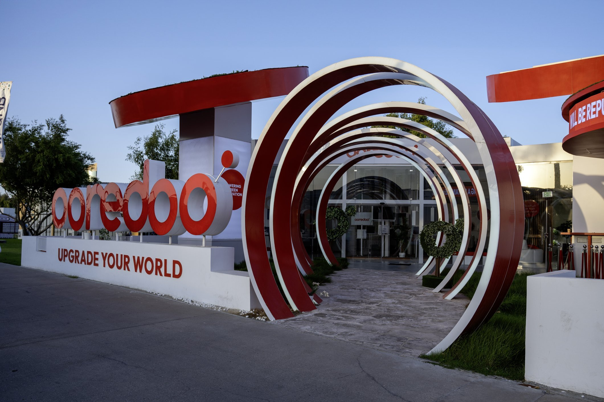

Case Study: B2B Marketing Research
Ooredoo: A B2B Marketing Research Study
Primary and secondary research into how Ooredoo Qatar manages its business-to-business relationships, competitive position, and marketing communications, built around a direct interview with an Ooredoo analytics team member.
Overview
Ooredoo, Qatar's leading telecom provider serving 3.2M+ customers with 15,000 employees across the MENA region, splits its operations into consumer (B2C) and business (B2B) units. This project focused entirely on the B2B side: how Ooredoo builds and manages relationships with enterprise clients, where it stands competitively, and how it could structure a marketing communications campaign to reinforce its "Upgrade Your World" repositioning.
Research Methodology
We secured a 25-minute in-depth interview (via Microsoft Teams) with an Ooredoo employee from the analytics department, using open-ended questions to surface how the B2B unit really operates. The interview was analyzed using discourse analysis to extract the buyer-seller relationship structure and marketing strategy, supplemented by secondary research from Ooredoo's public materials.
Buyer-Seller Relationship
Ooredoo's B2B clients (ministries, department stores like Carrefour, and SOHO/small office-home office businesses) are managed through dedicated account managers, one per enterprise client, rather than the call-center model used for B2C. A standout example raised in the interview: a strategic partnership with Hamad Medical Corporation, where both sides have strong mutual motivation to maintain the relationship.
We mapped the relationship through four phases:
- Awareness: advertising and trade shows introduce Ooredoo to prospective clients.
- Exploration: B2B package value (e.g. the "Aamali" line) is communicated and relationship terms are negotiated.
- Expansion: additional features (bonus discounts, business software, network maintenance) are layered in as trust builds.
- Commitment: the relationship becomes a full strategic partnership with shared digital resources and custom solutions.
Competitive Position
Ooredoo's direct rival in Qatar is Vodafone, though the wider competitive set spans TV, internet, and mobile providers. Ooredoo holds the edge in brand image and market tenure, but customer complaint handling is a relative weak point.
- Strengths: strong brand equity, first operator to launch 5G in Qatar, a highly diverse product portfolio, MENA-wide market leadership.
- Weaknesses: frequent customer complaints, inconsistent internet speeds, legacy IT infrastructure still being phased out.
- Opportunities: regional FIFA World Cup 2022 partnership, further digital transformation, investment in blockchain and IoT.
- Threats: Vodafone's stronger European presence, OTT messaging apps (WhatsApp, Telegram) eroding SMS/call revenue.
Marketing Communications Plan
With the objective of strengthening brand positioning around Ooredoo's "Upgrade Your World" repositioning, we designed a B2B-focused communications mix around three tools:
- Advertising: B2B-appropriate platforms only (LinkedIn, Twitter/X), deliberately excluding B2C-oriented channels like TikTok and Snapchat.
- Trade shows: live demos of B2B products (Aamali 5G, Quad Play) with co-branding opportunities, e.g. showcasing the Microsoft Office 365 partnership.
- Personal selling: one-to-one technical consultations for complex B2B packages (hardware, licensing, installation).
Campaign message: "Build trust, Upgrade and Innovate." Evaluation centered on direct-marketing and trade-show metrics (booth traffic, post-event sales, and salesperson performance surveys) rather than social vanity metrics.
Key Recommendations
- Pursue additional global event sponsorships beyond the regional FIFA World Cup 2022 deal to build lasting brand recall internationally.
- Expand streaming/content partnerships (beyond Netflix and STARZPLAY) as Ooredoo considers European market entry.
- Deepen partnerships with universities and educational institutions to build a pipeline of future talent and offset an aging workforce.